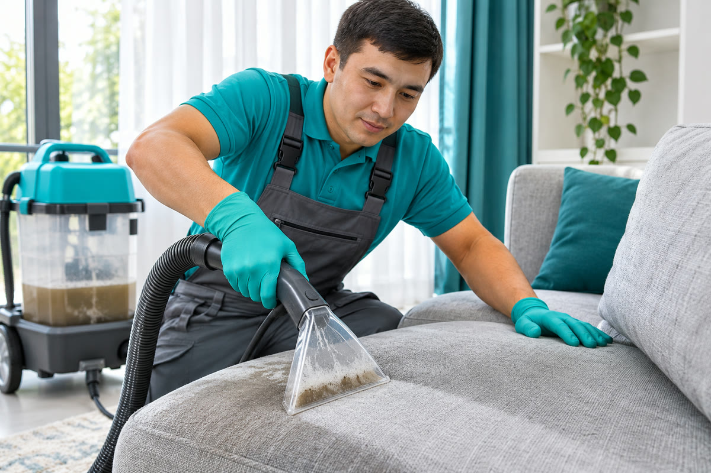
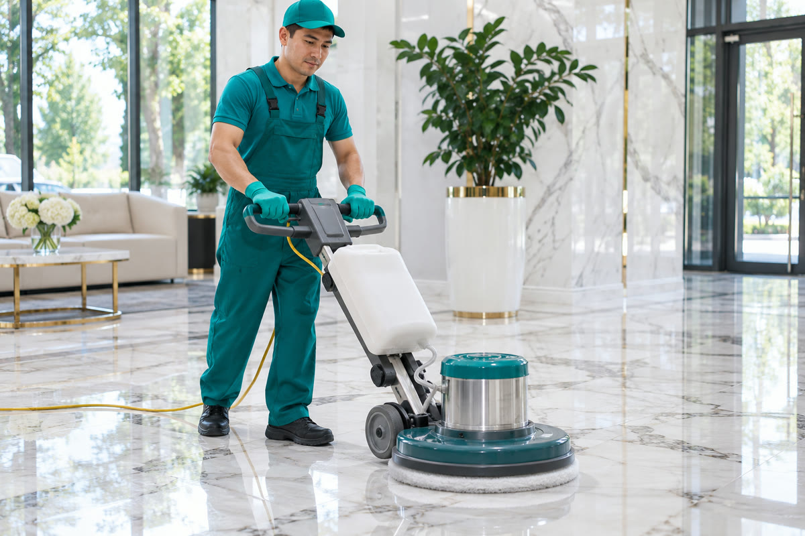
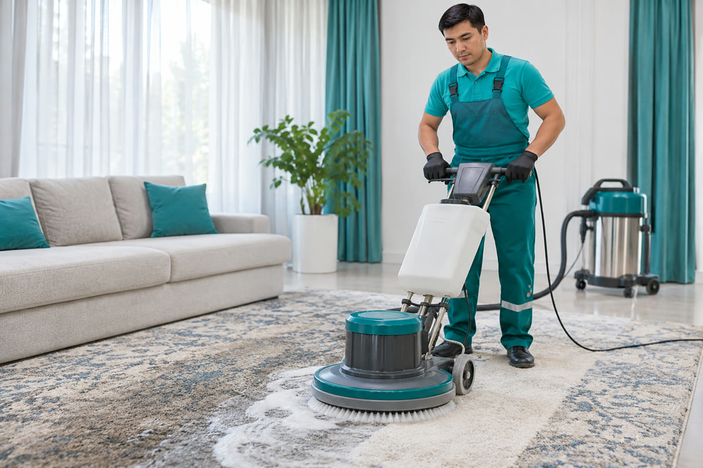
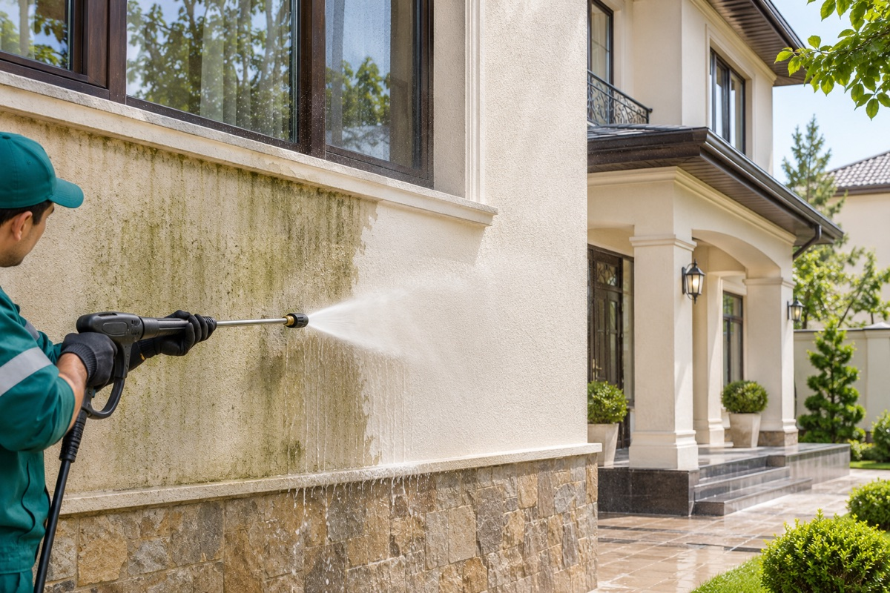
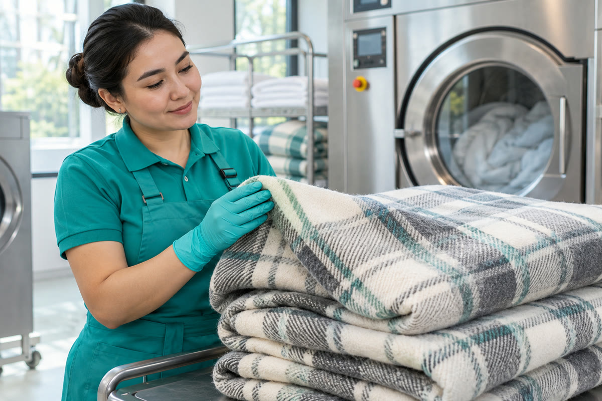
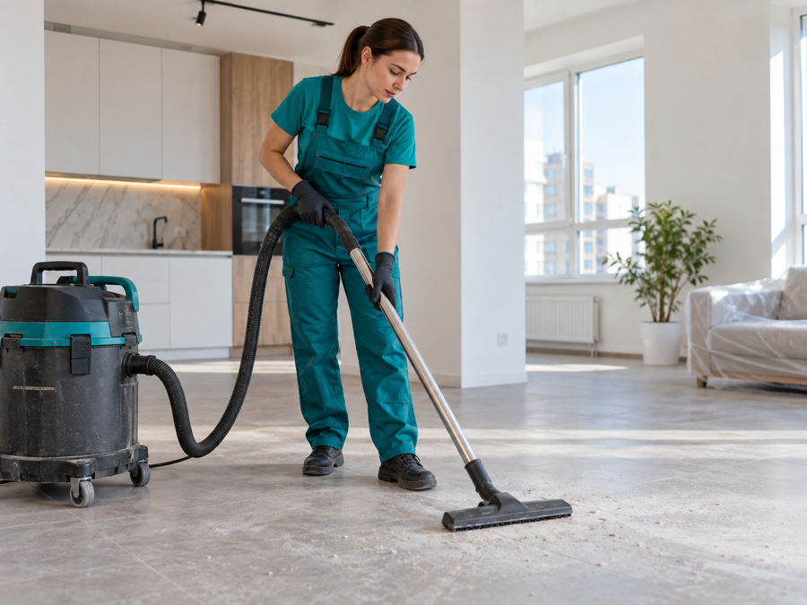
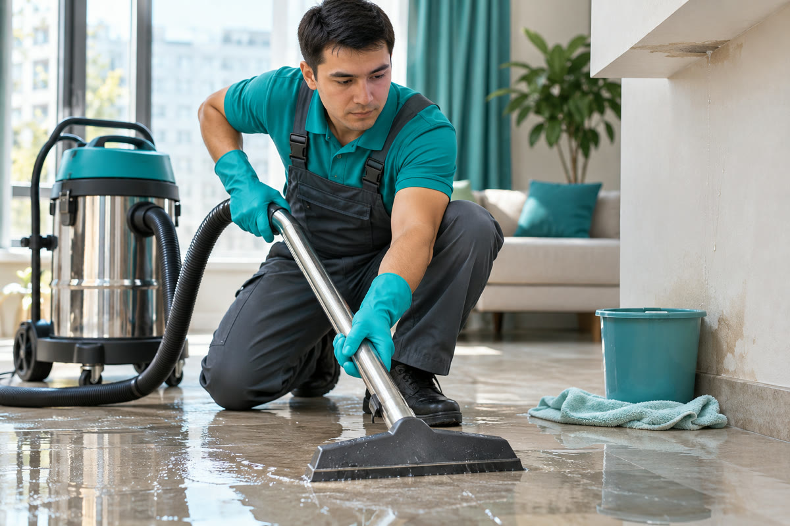
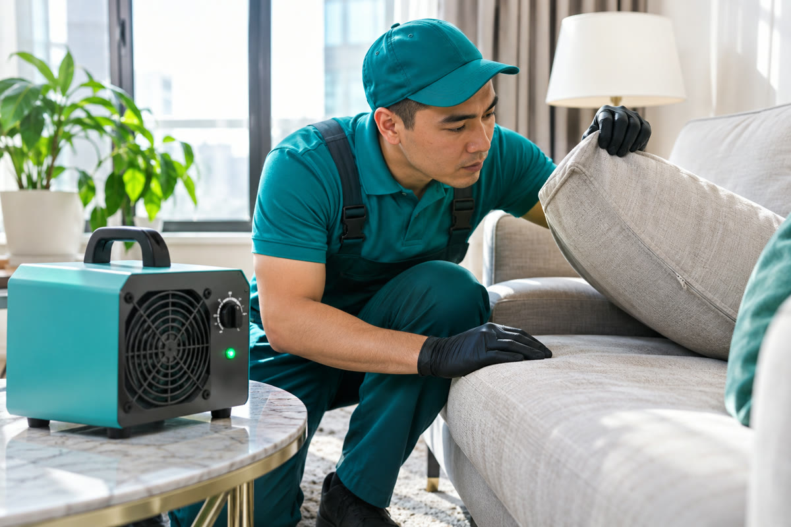

Go Clean katalogi
Barcha tozalash xizmatlari
Uy, ofis va maxsus obyektlar uchun kerakli xizmatni tanlang.






Ta’mirdan keyin tozalash
Qurilish changi, bo‘yoq va yelim izlarini yo‘qotish.
hisob-kitob asosidaobyekt bo‘yicha

Favqulodda holatdan keyin
Suv bosishi, yong‘in va boshqa hodisalardan keyin tozalash.
hisob-kitob asosidaobyekt bo‘yicha

Mog‘orni yo‘qotish
Mog‘or zararlagan joylarni tozalash va dezinfeksiya.
hisob-kitob asosidamaydon bo‘yicha